UDN
Search public documentation:
UIEditorUserGuideKR
日本語訳
中国翻译
Interested in the Unreal Engine?
Visit the Unreal Technology site.
Looking for jobs and company info?
Check out the Epic games site.
Questions about support via UDN?
Contact the UDN Staff
中国翻译
Interested in the Unreal Engine?
Visit the Unreal Technology site.
Looking for jobs and company info?
Check out the Epic games site.
Questions about support via UDN?
Contact the UDN Staff
UE3 홈 > 유저 인터페이스와 HUD > UI 에디터 사용 안내서
UI 에디터 사용 안내서
UI 시스템과 그 함수성들은 더이상 지원되지 않습니다. 현재 지원되는 유저 인터페이스 시스템 관련 정보는 스케일폼 GFx 문서를 참고해 주시기 바랍니다.
개요
용어
스타일을 만들어질 때, 이는 지속적인 STYLE_ID 에 배정됩니다. 특정 위젯에 대한 모든 스타일은 하나의 Unreal 패키지 파일에 저장됩니다. 이 패키지의 루트 객체는 UISkin 객체입니다. 스타일에서 요구하는 리소스도 스킨 파일에 저장하거나 다른 패키지에 배치할 수 있습니다.
게임 UI 에는 기본 스킨 역할을 하는 UISkin 패키지가 하나 이상 있어야 합니다. 한 번에 하나의 UISkin 만 활성화될 수 있으며 모든 사용자 지정 UISkin 은 기본 UISkin 을 기반으로 합니다. 사용자 지정 UISkin 은 교체할 스킨과 STYLE_ID 가 동일한 새로운 스타일을 만들어 이 스킨을 StyleLookupTable 에서 해당 STYLE_ID 아래 배치하여 스타일을 완전히 덮어쓰도록 결정할 수 있습니다. 특별히 사용자 지정 UISkin 에서 덮어쓰기 되지 않은 모든 스타일은 기본 스킨을 상속합니다.
기본적으로 위젯은 사용자가 정의한 UISkin 에 포함된 UIStyle 의 사용자 지정 버전에 매핑되나, 사용자가 특정 위젯에 완전히 다른 스타일을 지정하는 것을 선택할 수도 있습니다. 이것은 해당 스킨 세트와, 사용자 지정 UISkim 을 기반으로 하는 UISkin 에 대한 위젯 스타일만 변경합니다. 사용자 지정 UISkin 은 다른 사용자 정의 UISkin 을 기반으로 할 수 있다는 점에서 계층적이 될 수 있습니다. 데이터 저장소 데이터 저장소는 UI 가 게임에서 데이터를 참조하는 방식입니다. 데이터 저장소는 수명 관리를 캡슐화하므로 UI 가 안전한 방식으로 게임 데이터를 참조할 수 있게 합니다. 데이터 저장소는 UI 상호 작용 객체에 직접 연결되어 모든 위젯에서 사용할 수 있는 지속적인 방식이거나, 현재 장면에 연결되어 해당 장면에 포함된 위젯에서만 사용할 수 있는 일시적인 것이 될 수 있습니다. 지속적인 데이터 저장소는 모든 게임 유형 또는 캐릭터의 UI 데이터 등과 같은 정보를 추적할 수 있습니다. 임시 데이터 저장소는 일부 UI 값 위젯에 입력된 이름과 같은 것을 추적할 수 있습니다. 데이터 저장소는 모든 게임 유형의 이름과 같은 정적 정보와, 현재 게임 유형의 이름 등과 같은 동적 정보를 제공할 수 있습니다. 바운드 탐색 바운드 탐색은 장면의 포커스 체인을 고수하지 않는 위젯 간 탐색을 말합니다. 바운드 탐색은 NextControl 및 PreviousControl Input Event Aliases 에 바인드된 입력의 결과로 발생합니다. 언바운드 탐색 언바운드 탐색은 장면의 포커스 체인에서 장면에 대해 정의된 행태를 고수하는 위젯 간 탐색을 말합니다. 언바운드 탐색은 NavFocusLeft, NavFocusRight, NavFocusUp 및 NavFocusDown Input Event Aliases 에 바인드된 입력의 결과로 발생합니다.
Scene Editor 사용
장면 만들기
UnrealEd 의 Generic Browser 에서 메뉴 항목 File > New 를 선택하고 패키지 이름을 입력/선택한 다음, 장면 이름을 입력하고 Factory 설정으로서 UIScene 을 선택한 다음 OK 를 클릭합니다.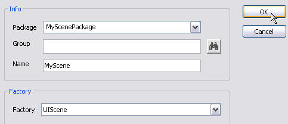
Scene Editor 열기
마우스 왼쪽 버튼을 사용하여 UnrealEd Generic Browser 의 Packages 트리 밑에 있는 패키지 이름을 클릭합니다. 마우스 왼쪽 버튼으로 Generic Browser 안의 장면을 두 번 클릭합니다. 참고: UI Scenes 의 리소스 유형별로 필터하는 것이 유용할 수도 있습니다.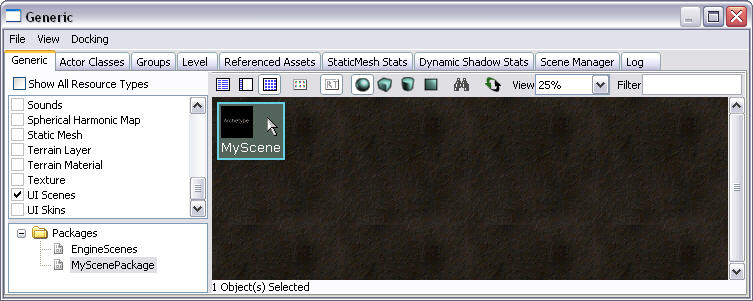
Scene Editor 개요
에디터 레이아웃
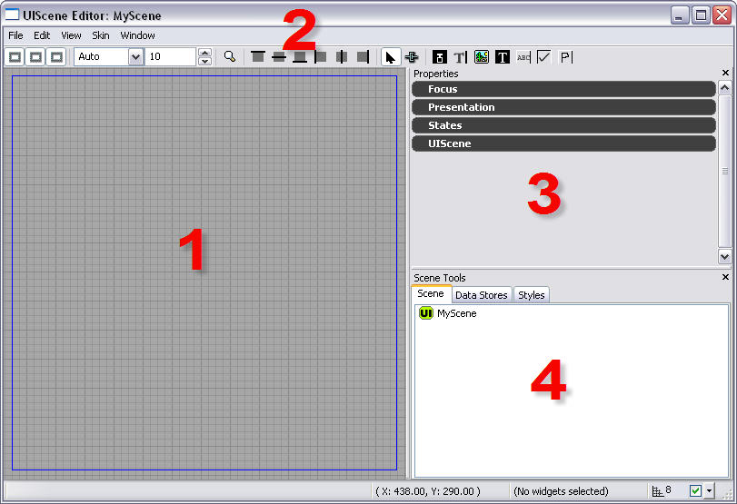
| 1. Scene Viewport | 이 뷰포트는 장면 레이아웃을 위한 캔버스입니다. |
| 2. 장면 Menu Bar? 및 Tool Bar? | 메뉴 바와 툴바는 장면을 구축하는 동안 사용하는 설정 및 도구에 신속하게 접근할 수 있도록 해줍니다. |
| 3. Scene Properties | 장면 안에서 현재 선택된 항목의 속성입니다. |
| 4. Scene Tools | 장면 위젯 구성, 데이터 저장소 결합 및 스타일 편집을 위해 아티스트가 사용할 수 있는 도구입니다. |
Menu Bar
File
Close Scene Editor 를 닫습니다.Edit
Undo Redo Cut Copy Paste Paste As Child Rename Selected Widgets Delete Selected Widgets Bind selected widgets to datastore Data Store Browser Modify Default UI Event Alias Key Bindings...View
Reset View Center On Selected Widgets Draw Background Draw Grid Draw Wireframe Viewport Outline Container Outline Selection Outline Show Dock Handles Draw Title Safe RegionsSkin
Save Selected Skin Edit Selected Skin Load Existing Skin Create New SkinScene
Refresh SceneWindow
Properties 속성창을 표시합니다. Positioning 포지셔닝창을 표시합니다. Docking 도킹창을 표시합니다. Scene Tools 장면 도구창을 표시합니다.Tool Bar
정렬 도구
Alignment 툴바는 장면의 요소들을 정렬하는데 사용하는 도구를 제공합니다. 정렬 도구를 사용하려면 객체를 선택한 다음 원하는 정렬 도구를 클릭합니다.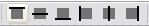
Alignment 툴바에는 다음과 같은 도구(왼쪽에서 오른쪽 순)들이 있습니다.
- Align to Viewport: Top
- 선택한 객체의 맨 위 가장자리를 뷰포트의 맨 위 가장자리에 맞춥니다.
- Align to Viewport: Center Vertically
- 선택한 객체의 가운데를 수직 좌표에 맞춥니다.
- Align to Viewport: Bottom
- 선택한 객체의 맨 아래 가장자리를 뷰포트의 맨 아래 가장자리에 맞춥니다.
- Align to Viewport: Left
- 선택한 객체의 왼쪽 가장자리를 뷰포트의 맨 왼쪽 가장자리에 맞춥니다.
- Align to Viewport: Center Horizontally
- 선택한 객체의 가운데를 수평 좌표에 맞춥니다.
- Align to Viewport: Right
- 선택한 객체의 오른쪽 가장자리를 뷰포트의 맨 오른쪽 가장자리에 맞춥니다.
콘트롤
마우스 콘트롤
키보드 콘트롤
| Ctrl+Up | 위젯 순서 변경 (Scene Tools 패널의 Scene 탭에서 선택) |
| Ctrl+Down | 위젯 순서 변경 (Scene Tools 패널의 Scene 탭에서 선택) |
단축 키
위젯 작업
위젯 만들기
3 가지의 다른 방식을 통해 장면에서 위젯을 만들 수 있습니다. 첫 번째 방식은 UIScene 에디터 창의 맨 위에 있는 장면의 툴바 버튼 패널에 있는 위젯 만들기 도구를 활용하는 것입니다. 특정 위젯을 만드는 작업은 매우 간단하여 적합한 위젯 도구를 선택하고 클릭하여 장면 창으로 끌어가기만 하면 됩니다. 또한 장면 창을 마우스 오른쪽 버튼으로 클릭하고 컨텍스트 메뉴에서 Place Widget 을 선택하거나, 장면 도구 패널의 Scene 탭에서 UI Scene 아이콘 (https://udn.epicgames.com/pub/Three/UIEditorUserGuideKR/UnrealUI_Tools_SceneIcon.jpg)을 클릭하고 컨텍스트 메뉴에서 Place Widget 을 선택할 수도 있습니다. 컨텍스트 메뉴를 활용하는 이 두 접근 방식은 모두 만드는 시점에 위젯 크기를 지정하지 못한다는 단점이 있습니다. 그러나 도구 모음에 있는 기본 유형 외에도 여러 다양한 위젯 유형을 선택할 수 있다는 장점이 있습니다.
위젯 이동
위젯을 만든 후에는 선택 도구 (https://udn.epicgames.com/pub/Three/UIEditorUserGuideKR/UnrealUI_SelectionTool.jpg)에서 위젯을 선택하고 크기 조절 핸들 사이의 가장자리를 아무 곳이나 클릭하여 끌기만 하면 위젯을 움직일 수 있습니다. 마우스 커서가 십자 ( ) 로 바뀌고, 마우스 커서가 선택한 위젯을 잡아 이동하기에 적합한 영역으로 가면 위젯의 바깥쪽 가장자리 색상이 바뀝니다.
) 로 바뀌고, 마우스 커서가 선택한 위젯을 잡아 이동하기에 적합한 영역으로 가면 위젯의 바깥쪽 가장자리 색상이 바뀝니다.

위젯 크기 변경
위젯 크기 변경은 선택 도구를 사용해 위젯을 선택하고 ( ) 모든 모서리와 각 가장자리의 가운데에 있는 정사각형 모양 핸들 중 하나를 클릭해서 끌면 됩니다. 마우스 커서를 크기 조절 핸들 위로 이동하면 커서가 양방향 화살표 아이콘으로 바뀌어 크기 조절 핸들 위에 놓여졌음을 표시합니다.
) 모든 모서리와 각 가장자리의 가운데에 있는 정사각형 모양 핸들 중 하나를 클릭해서 끌면 됩니다. 마우스 커서를 크기 조절 핸들 위로 이동하면 커서가 양방향 화살표 아이콘으로 바뀌어 크기 조절 핸들 위에 놓여졌음을 표시합니다.

고급 위젯 편집
다음 편집 창은 Scene 에디터의 주 메뉴 표시줄에 있는 Window 하위 메뉴에서 사용 가능합니다.속성
위젯 특정 속성(예: 표현, 사운드 등)은 Properties 에디터에 있습니다.배치 및 크기 조정
Positioning 에디터에서는 위젯의 위치 및 크기를 세밀하게 제어할 수 있습니다. Positioning 에디터는 위젯의 4 면 위치나, 수치 값을 통해 전체 장면을 독립적으로 조절할 수 있는 기능을 제공합니다. 장면 또는 위젯의 너비 및 높이(픽셀 단위)도 Positioning 에디터에서 조절할 수 있습니다. 장면과 그 위젯 또는 위젯과 그 자식 위젯 간의 관계가 위치 및 크기 변경의 전파를 초래한다는 사실을 기억하십시오. 자식 위젯이 있는 위젯을 예로 들면 부모 위젯 면 중 하나의 위치를 조정할 경우, 해당 면이 움직인 방향으로 위젯의 크기만 조절되는 것이 아니라 동등한 백분율에 따라 같은 방향으로 자식 위젯의 크기 역시 조절됩니다. 이 관계는 특정 장면의 모든 위젯이 해당 장면의 자식인 위젯과 장면 간에서도 같습니다.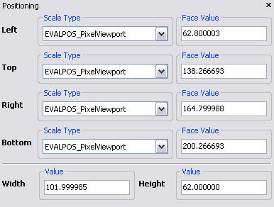
 선택한 장면 또는 위젯 면에 대한 수치적 표현은 각 면에 대해 제시되는 Scale Type 캡션 아래에 제공된 드롭다운 메뉴에서 선택할 수 있는 6 가지 다른 방식으로 해석할 수 있습니다. 이 6 가지 표현은 사실상 3 가지 기본 표현, 뷰포트, 장면 및 객체를 픽셀과 백분율 단위로 해석한 결과입니다. 픽셀과 백분율 표현은 모두 상황에서 요구하는 바에 따른 한정된 픽셀 오프셋이나 상대적 백분율 기반 비율을 유지할 수 있는 옵션을 제공할 수 있습니다. 이 Scale Type 중 하나를 선택하면 해당하는 면에 대해 Face Value 캡션에 나열되는 값의 의미를 다시 정의하게 됩니다. 다음과 같은 Scale Type 들을 사용할 수 있습니다.
선택한 장면 또는 위젯 면에 대한 수치적 표현은 각 면에 대해 제시되는 Scale Type 캡션 아래에 제공된 드롭다운 메뉴에서 선택할 수 있는 6 가지 다른 방식으로 해석할 수 있습니다. 이 6 가지 표현은 사실상 3 가지 기본 표현, 뷰포트, 장면 및 객체를 픽셀과 백분율 단위로 해석한 결과입니다. 픽셀과 백분율 표현은 모두 상황에서 요구하는 바에 따른 한정된 픽셀 오프셋이나 상대적 백분율 기반 비율을 유지할 수 있는 옵션을 제공할 수 있습니다. 이 Scale Type 중 하나를 선택하면 해당하는 면에 대해 Face Value 캡션에 나열되는 값의 의미를 다시 정의하게 됩니다. 다음과 같은 Scale Type 들을 사용할 수 있습니다.
- PixelViewport
- 이 Scale Type 을 사용하는 Face Value 의 값은 뷰포트의 상단 왼쪽 모서리에 있는 뷰포트의 원점(0,0)에 대한 특정 면의 절대 픽셀 값과 동일합니다. 뷰포트의 프레임은 뷰포트 영역 범위를 정의하며 장면 뷰포트에서 파란색 직사각형으로 표시됩니다.
- PixelScene
- 이 Scale Type 을 사용하는 맨 위 및 왼쪽 면의 Face Value 는 장면의 상단 왼쪽 모서리에 있는 장면의 원점(0,0)에 대한 특정 면의 절대 픽셀 값과 동일합니다. 오른쪽 및 하단 면의 Face Value 는 위젯과 너비 및 높이와 동일한 반대 면으로부터의 픽셀 거리와 동일합니다. 장면 프레임은 장면 영역 범위를 정의하고 장면 뷰포트에서 녹색 직사각형으로 표시됩니다. 기본적으로 장면 프레임은 뷰포트 프레임과 규격이 같으므로 뷰포트 프레임의 파란색 직사각형에 가려질 수 있습니다.
- PixelOwner
- 이 Scale Type 을 사용하는 맨 위 및 왼쪽 면의 Face Value 는 부모의 상단 왼쪽 모서리에 대한 위젯의 특정 면의 절대 픽셀 값과 동일합니다. 오른쪽 및 하단 면의 Face Value 는 위젯과 너비 및 높이가 동일한 반대 면으로부터의 픽셀 거리와 동일합니다. 선택한 위젯에 부모 위젯이 없는 경우 해당 Scale Type 이 PixelScene type 과 동일하게 되는 경우의 장면이 그 부모가 됩니다.
- PercentageViewport
- 이 Scale Type 을 사용하는 Face Value 의 값은 면에 따라 뷰포트의 너비 또는 높이로 나눈, 뷰포트 상단 왼쪽 모서리로부터 특정 면의 절대 픽셀 오프셋의 백분율과 같습니다. 예를 들어 위젯 왼쪽 면의 Face Value 값이 0 이면 위젯의 왼쪽 면이 뷰포트의 왼쪽 면과 정확하게 맞춰집니다. 같은 시나리오에서 값이 1 이면 이는 뷰포트의 너비 100% 오프셋을 나타내므로, 위젯의 왼쪽 면이 뷰포트의 오른쪽 면과 정확하게 맞춰집니다.
- PercentageScene
- 이 Scale Type 을 사용하는 Face Value 의 값은 면에 따라 장면의 너비 또는 높이로 나눈, 장면 상단 왼쪽 모서리로부터 특정 면의 절대 픽셀 오프셋 백분율과 같습니다. 예를 들어 위젯 왼쪽 면의 Face Value 값이 0 이면 위젯의 왼쪽 면이 장면의 왼쪽 면과 정확하게 일치됩니다. 같은 시나리오에서 값이 1 이면 이는 장면의 너비 100% 오프셋을 나타내므로, 위젯의 왼쪽 면이 장면의 오른쪽 면과 정확하게 맞춰집니다.
- PercentageOwner
- 이 Scale Type 을 사용하는 Face Value 의 값은 면에 따라 부모의 너비 또는 높이로 나눈, 부모의 상단 왼쪽 모서리로부터 특정 면의 절대 픽셀 오프셋 백분율과 같습니다. 예를 들어 다른 위젯의 자식인 위젯이 있는 시나리오에서 왼쪽 면의 Face Value 값이 0 이면 위젯 왼쪽 면이 부모의 왼쪽 면에 정확하게 맞춰집니다. 같은 시나리오에서 값이 1 이면 이는 부모의 너비 100% 오프셋을 나타내므로 위젯의 왼쪽 면이 부모의 오른쪽 면과 정확하게 맞춰집니다.
도킹
장면의 여러가지 위젯에는 서로 도킹 하는 기능이 있습니다. 도킹이란 말은 둘 이상의 위젯 가장자리 사이의 관계를 설명하는 데 사용됩니다. 위젯이 둘인 시나리오의 경우 위젯 1 의 한 가장자리가 위젯 2 의 한 가장자리에 도킹되면 위젯2의 도킹된 가장자리 위치에 대한 변경이 위젯 1 의 도킹된 가장자리에 전파됩니다. 다음의 예는 이 관계를 잘 나타내고 있습니다.도킹 관계를 설정하려면 장면에 최소 둘 이상의 위젯이 있어야 하고 UIScene 에디터 창 맨 위에 있는 버튼 패널에서 사용할 수 있는 선택 도구 (https://udn.epicgames.com/pub/Three/UIEditorUserGuideKR/UnrealUI_SelectionTool.jpg)에서 선택되어야 합니다. 장면에 배치된 위젯을 선택하면 각 가장자리의 가운데에 4 개의 원이 분명하게 나타납니다. 이 각각의 원은 가장 근접한 가장자리에 대한 도킹 핸들입니다. 이 핸들 중 하나를 클릭하여 끌면 핸들과 마우스 커서 사이에 연결이 그려집니다. 이 연결을 장면 내의 다른 위젯 위로 끌면 두 번째 위젯의 도킹 핸들이 그려집니다. 두 번째 위젯의 도킹 핸들 중 하나 위로 연결을 끌어간 다음 마우스를 놓으면 두 위젯의 두 가장자리가 도킹됩니다.

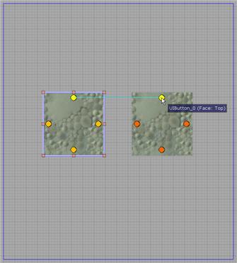

이제 두 번째 위젯의 도킹된 가장자리를 한 방향으로 끌어가면 첫 번째 위젯의 도킹 가장자리가 해당하는 만큼 움직입니다. 첫 번째 위젯의 도킹된 가장자리와 두 번째 위젯의 도킹된 가장자리 위치 사이의 여백은 Docking Editor 를 통해 변경할 수 있습니다. Docking Editor 는 관계의 첫 번째 위젯을 마우스 오른쪽 버튼으로 클릭하고 컨텍스트 메뉴에서 Docking Editor 를 선택하면 사용할 수 있습니다. Docking Editor 를 통해 정의할 수 있는 여백 값은 도킹된 두 가장자리의 위치 사이에 있는 오프셋 크기를 표시합니다. 도킹 관계는 도킹 관계가 시작된 곳인 원을 마우스 오른쪽 버튼으로 클릭하고 Break Docking Link 를 선택하면 간단히 제거할 수 있습니다.

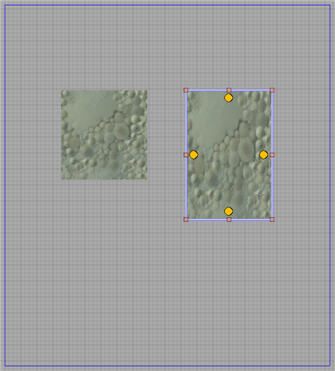
장면 도구
스타일
Styles 는 위젯이 표시되는 방법을 제어합니다. 스타일은 텍스처를 렌더하는 방법(크기 조절, 확대 등)과 관련한 정보를 비롯하며 문자열(글꼴, 색상, 속성 등) 그리기를 위한 정보도 포함할 수 있습니다. 스타일을 변경함으로써 위젯의 모습은 각 상태에 따라 다르게 할 수 있습니다. 서로 다른 위젯에서는 서로 다른 스타일 유형이 필요할 수 있습니다 (현재로서는 텍스트, 이미지 및 콤보가 있습니다 ). 사용자는 한 스타일을 만든 다음 이것을 장면 내 여러 위젯에 적용하여 동일한 속성를 공유하게 할 수 있습니다. 모든 스타일은 별도의 패키지 파일로서 저장되는 Skim 이라는 컨테이너에 상주합니다. 전체 게임 UI 에 대해 적어도 하나의 Skin 파일이 있어야 합니다. Scene Tools 패널에 있는 Style 브라우저를 통해 특정 스킨의 스타일을 추가, 제거 및 편집할 수 있습니다.스타일 계층 구조
새 스타일을 만들 때는 기존 스타일을 템플릿으로 선택하여 이를 기반으로 합니다. 그러면 새로운 스타일이 트리 계층 구조에서 기존 스타일의 자식 노드로 표시되며 두 스타일 간의 특수 연결을 형성합니다. 계층 구조 내에서 스타일 간의 관계는 아키타입과 아키타입 인스턴스의 관계와 매우 유사합니다. 기존 스타일을 바탕으로 새 스타일이 만들어지면 기존 스타일이 새 스타일의 아키타입이 됩니다. 이후로는 부모 스타일의 속성을 변경할 때마다, 해당 속성을 자식 스타일에서 덮어 쓰지 않았다면, 아키타입과 아키타입 인스턴스의 경우에서처럼 이 변경이 자식 스타일에 자동으로 전파됩니다. 이러한 전파 과정은 상태를 기준으로 발생합니다. 즉 부모 스타일의 Enabled 상태에 대한 변경 사항이 자식 스타일의 Enabled 상태에만 전파됨을 뜻합니다.새 스타일 만들기
현재의 스킨에서 새 스타일을 만들려면 스타일 브라우저의 항목을 마우스 오른쪽 버튼으로 클릭한 다음 Create New Style 을 선택합니다. 그러면 스타일 유형, 고유 태그, 이름 및 템플릿을 묻는 창이 나타납니다. 템플릿은 새 스타일이 기준으로 할 스타일을 가리키며, 새 스타일을 기존 스타일의 자식으로서 삽입합니다. OK를 클릭하면 새 스타일이 만들어지고 즉시 Style Editor 창이 열립니다.
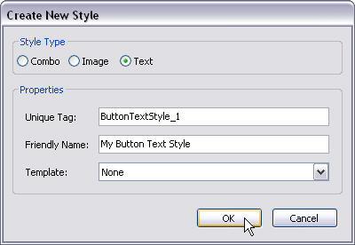
스타일 편집
Style Editor 를 통해 스타일을 편집할 수 있습니다. 몇 가지 방법으로 이 에디터를 열 수 있습니다. 하나는 Styles 브라우저에서 "Edit Style" 을 선택하는 것이고 두 번째는 위젯을 마우스 오른쪽 버튼으로 클릭한 다음 위젯의 팝업 메뉴에서 Edit Style 을 선택하는 것입니다. Style Editor 창도 새 스타일을 만들 때 자동으로 나타납니다. 다음은 다양한 창 영역을 보여 주는 Style Editor 창의 예입니다. 이 에디터는 텍스트 스타일의 속성을 표시합니다. 편집하는 스타일의 유형에 따라 Style Editor 가 다르게 보입니다.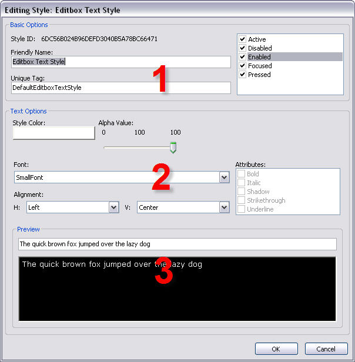
| 1. 일반 속성 | 모든 유형의 스타일에 적용되고 스타일의 특정 상태를 선택/편집할 수 있도록 하는 일부 일반 속성을 포함합니다. 상태 옆의 체크박스가 공백이라면, 이 상태에 대한 이 스타일의 값이 부모 스타일의 동일한 상태로부터 상속됨을 뜻합니다. 따라서 이 상태에 대한 부모 스타일의 속성를 덮어쓰려면 상태 옆의 상자를 체크해야 합니다. |
| 2. 커스텀 속성 | 현재 편집하고 있는 스타일 유형에 고유한 속성들을 표시합니다. 텍스트 스타일 및 이미지 스타일에 따라 다릅니다. |
| 3. 미리보기 창 | 현재 속성의 값이 위젯에 미치는 영향을 미리 보기로 표시합니다. |
위젯에 스타일 배정
위젯을 마우스 오른쪽 버튼으로 클릭하면 팝업 메뉴가 열립니다. 그런 다음 Select Style 을 선택하면 배정할 수 있는 스타일들의 목록이 표시됩니다. 위젯에 현재 배정된 스타일 옆에는 체크 표시가 나타납니다. 원하는 스타일을 선택하면 위젯이 새로운 스타일로 다시 업데이트됩니다.
글꼴 조정
현재의 가로 세로 비율과 콘텐츠가 제작되었을 당시의 가로 세로 비율간의 차이를 바탕으로 글꼴의 배율을 조정할 수 있습니다. 라벨의 스타일에 대한 AutoScale 모드를ResolutionBased 로 하면 됩니다 (Style Editor 에서는 Resolution Scaled 라고 불림).
스킨
UI 시스템은 스킨 개념, 장면에 대해 사용자 지정 스킨을 만들기, 여러 장면에서 재사용하기를 지원합니다. 스킨은 스타일의 컨테이너입니다. 전체 게임 UI 에는 기본 스킨 패키지 역할을 하는 스킨 패키지가 하나 이상 있어야 합니다. 기본 스킨은 게임 내 모든 장면 위젯에 적용할 수 있는 스타일의 기본 버전을 포함합니다. 사용자는 스킨에 스타일을 추가, 편집 또는 제거할 수 있습니다.사용자 지정 스킨
사용자는 사용자 지정 스킨을 만들 수 있지만 직접 또는 간접적으로 기본 스킨 패키지를 기반으로 해야 합니다. 사용자는 스타일 추가, 편집 및 제거 외에도 기본 스킨 패키지로부터 파생된 스타일을 덮어쓰거나 교체할 수 있습니다. 새 사용자 지정 스킨이 만들어지면, 이는 직접 스타일을 포함하게 되는 것이 아니라 부모 스킨 스타일에 대한 참조를 암시적으로 포함하는 것입니다. 스타일의 실제 사용자 지정 사본으로 이러한 참조를 교체할 수 있습니다. 새 스타일을 만드는 대신 스타일 참조를 교체하면 기준 스킨 스타일이 교체된 사본에 대한 아키타입이 되고 이 아키타입에 대한 변경이 사용자 지정 스킨에서 교체된 스타일에 자동으로 전파됩니다. 또한 이 두 스타일은 동일한 기본 ID 를 갖기 때문에 스킨을 기본 스킨에서 사용자 지정 스킨으로 변경할 수 있으며, 덮어 쓰여진 스타일은 기본 스킨의 원래 스타일 버전에서 사용한 위젯에 자동으로 적용됩니다. 이렇게 하면 기본 위젯 스타일을 직접 변경하지 않고도 장면 간에 스킨을 신속하게 변경할 수 있습니다. 여전히 특정 위젯과 전적으로 다른 스타일을 배정하도록 할 수 있으나, 이것은 해당 스킨의 위젯 스타일과 사용자 지정 스킨을 기반으로 하는 스킨만 변경합니다. 사용자 지정 스킨은 사용자 정의 스킨 세트가 다른 사용자 정의 스킨 세트의 기반이 될 수 있다는 면에서 계층적이 될 수 있습니다..게임에서의 사용자 지정 스킨 사용
엔진이 사용자 지정 스킨을 사용하도록 지시하려면 다음 행을 게임의 DefaultUI.ini 에 추가해야 합니다.[Engine.UIInteraction] UISkinName="MyPackageName.MySkinName"
사용자 지정 스킨 세트 만들기
기존 스킨을 기반으로 사용자 지정 스킨 세트를 만들려면 UI Editor 의 Scene Tools 패널에 있는 Styles Browser 로 갑니다. 현재 스킨의 이름을 표시하는 상자 옆에 느낌표가 있는 버튼이 있습니다 ( ). 이 버튼을 클릭하여 Create New Skin 을 선택합니다. 그러면 다음의 정보를 입력하라는 메시지가 표시됩니다. Package Name - 새 스킨을 저장할 패키지 파일의 이름, Skin Name - 새 사용자 지정 스킨 이름. 그 다음 OK 를 클릭하면 새로운 사용자 지정 스킨이 만들어집니다. 이제 새 스킨을 사용하도록 선택할 경우 빈 것으로 표시되지만, 다른 스킨을 기반으로 하기 때문에 여기에는 기본 스킨의 스타일에 대한 참조가 내재적으로 포함되어 있습니다. 즉 기본 스킨을 사용하는 것처럼 위젯에 동일한 스타일을 적용할 수 있습니다. 이 시점에서 사용자 지정 스킨에 새 스타일을 만들거나 기본 스킨 스타일을 덮어쓸 수 있습니다. 참고 존재하지 않는 패키지 이름을 지정할 경우, 패키지가 만들어지기는 하지만 보기를 새로 고치지 않으면 Generic Browser 에 자동으로 나타나지 않을 수 있습니다.
). 이 버튼을 클릭하여 Create New Skin 을 선택합니다. 그러면 다음의 정보를 입력하라는 메시지가 표시됩니다. Package Name - 새 스킨을 저장할 패키지 파일의 이름, Skin Name - 새 사용자 지정 스킨 이름. 그 다음 OK 를 클릭하면 새로운 사용자 지정 스킨이 만들어집니다. 이제 새 스킨을 사용하도록 선택할 경우 빈 것으로 표시되지만, 다른 스킨을 기반으로 하기 때문에 여기에는 기본 스킨의 스타일에 대한 참조가 내재적으로 포함되어 있습니다. 즉 기본 스킨을 사용하는 것처럼 위젯에 동일한 스타일을 적용할 수 있습니다. 이 시점에서 사용자 지정 스킨에 새 스타일을 만들거나 기본 스킨 스타일을 덮어쓸 수 있습니다. 참고 존재하지 않는 패키지 이름을 지정할 경우, 패키지가 만들어지기는 하지만 보기를 새로 고치지 않으면 Generic Browser 에 자동으로 나타나지 않을 수 있습니다.

사용자 지정 스킨 세트에서 기본 스타일 덮어쓰기
사용자 지정 스킨을 만든 후에는 기준 스킨의 스타일을 덮어쓸 수 있습니다. 이를 위해서는 Skin Editor 에서 사용자 지정 스킨을 열어야 합니다. Unreal Editor 의 Generic Browser 에서 사용자 지정 스킨을 저장한 패키지를 열고 마우스 왼쪽 버튼으로 사용자 지정 스킨을 두 번 클릭합니다. 그러면 스킨의 계층 구조를 확인하고, 사용자 지정 스킨에서 기본 스타일을 덮어쓰며, 또한 사용자 지정 스타일을 추가, 편집 및 제거할 수 있는 Skin Browser 창이 표시되어야 합니다. Styles 탭에 표시된 스타일 목록에는 기울임꼴 로 표시된 항목들이 있을 수 있습니다. 이는 특정 스타일이 사실은 해당 사용자 지정 스킨이 아니라 부모 스킨에 있으며 이 사용자 지정 스킨은 내재적으로 그에 대한 참조를 포함함을 나타냅니다. 기울임꼴 로 표시된 항목을 마우스 오른쪽 버튼으로 클릭하고 Replace Style Style Name In Current Skin 을 선택하여 스타일의 사용자 지정 버전으로 해당 참조를 덮어쓰거나 교체할 수 있습니다. 항목의 글꼴에서 기울임꼴 효과가 사라지며, 이 시점에서 사용자 지정 스킨이 자체의 스타일 사본을 포함하게 됩니다.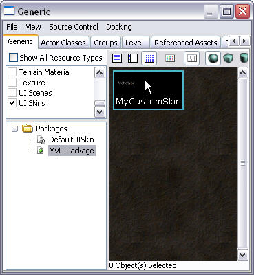

스킨 변경
장면에 사용된 스킨을 변경하려면 먼저 스킨이 있는 패키지가 Generic Browser 에 로드되었는지 확인하십시오. 이후 Scene Tools 패널의 Styles 탭에 있는 드롭다운 상자로 이동하여 적절한 스킨을 선택합니다.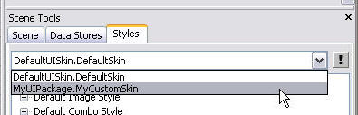
데이터 저장소
위젯이 시각적으로 표현하는 데이터는 보통 사용하는 스타일과 그 속성에 따라 제어되지만 위젯이 조작할 수 있는 데이터는 일반적으로 UI Kismet Editor 의 로직을 통해 정의됩니다. 스타일과 Kismet 이 제공하는 기능은 이 가이드에서 나중에 설명합니다. 데이터 저장소도 위젯이 표현 및 수정할 수 있는 데이터 소스를 제공합니다. 현재 데이터 저장소 기능은 문자열 데이터 표현에 국한되지만 향후에는 이미지 데이터, 게임 상태 및 게임 설정 데이터를 표시, 수정하고 게임에 다시 알릴 수 있는 위젯을 제공할 것입니다.문자열 데이터에 데이터 저장소를 사용하려면 라벨 또는 라벨 버튼 등과 같은 문자열 데이터를 표시하는 기능이 있는 위젯을 만들어야 합니다. 위젯이 만들어지면 선택 도구로 위젯을 선택한 다음 (
) Scene Tools 패널에 있는 Data Stores 탭으로 이동합니다. Data Stores 탭에서는 두 가지 뷰포트를 볼 수 있습니다. 맨 위 뷰포트는 사용 가능한 데이터 저장소의 카테고리 목록을 표시합니다. 이름이 Data Store Tags 인 하단 뷰포트는 위의 카테고리 뷰포트에서 선택한 카테고리에서 사용 가능한 데이터 저장소 목록을 표시합니다. Data Store Tags 뷰포트는 선택한 카테고리에 하위 카테고리가 없는 경우에만 입력됩니다.
카테고리 뷰포트에서 Strings 선택을 확장하면 문자열 카테고리 목록을 표시할 수 있습니다. Strings 선택을 확장하면 추가적인 문자열 카테고리 목록을 보여 줍니다. 이러한 문자열의 하위 카테고리는 상세히 확장 가능합니다. 특정 분기 하단의 카테고리를 선택하면 Data Stores Tags 뷰포트에 사용 가능한 문자열 목록이 입력됩니다. 원하는 문자열을 마우스 오른쪽 버튼으로 클릭하면 문자열 중 하나가 선택된 위젯에 바인드됩니다. 컨텍스트 메뉴에 선택한 위젯을 주어진 문자열에 바인드하는 옵션이 표시되며 이 옵션을 선택하면 위젯 라벨의 값이 선택한 문자열의 값으로 변경됩니다.
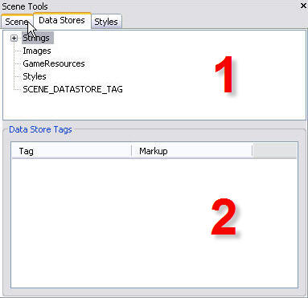
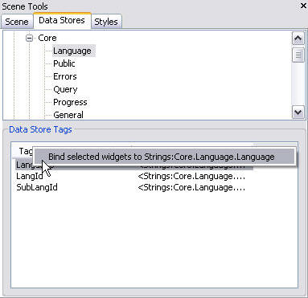
| 1. 카테고리 뷰포트 | 데이터 저장소 카테고리 뷰포트는 모든 사용 가능한 데이터 저장소 카테고리 목록을 표시합니다. |
| 2. 태그 뷰포트 | 데이터 저장소 태그 뷰포트는 선택한 카테고리에 저장된 개별 데이터 저장소 목록을 표시합니다. |
포커스 체인
장면에서는 전통적으로 Focused 상태인 위젯이 사용자 입력을 받는 위젯입니다. 이것이 기본적으로 대부분 위젯의 경우이지만 Edit 메뉴의 Modify Default UI Event Key Bindings 에디터를 통해 이 행태를 다시 정의할 수 있습니다. Modify Default UI Event Key Bindings 에디터가 제공하는 기능은 입력 처리 섹션에서 더 상세히 논의하겠습니다. 포커스 체인 시스템을 설명하기 위해 Focused 상태인 위젯이 입력을 받는 위젯이라고 가정해 보겠습니다.포커스 체인 시스템은 디자이너가 현재 Focused 상태에 있는 위젯이 관련 사용자 입력을 통해 NavFocus 이벤트를 받을 경우, 어느 위젯이 Focused 상태로 전환될 것인지 정의하는 방식입니다. 현재의 위젯으로부터 이러한 포커스 변경을 트리거하는 관련 입력은 NavFocus 이벤트를 트리거할 키를 정의함으로써 정위됩니다. 이벤트 키 결합에 대한 정보는 입력 섹션에서 더 상세히 논의하겠습니다. 포커스 체인이라는 용어는 디자이너가, 위젯 간에 포커스가 이동하는 위치를 나타내는 체인 또는 UI 장면 내 위젯 간에 연결 시스템을 정의할 수 있다는 데서 기인합니다. 포커스 체인에서 정의된 행태를 트리거하는 NavFocus 이벤트를 생성한 입력을 "언바운드 탐색" 이라고 합니다. 역으로 "바운드 탐색" 은 포커스 체인을 고수하지 않으며 대신 선형 방식으로 위젯을 단순히 순회하는 포커스 변화 행태를 초래하는 NextControl 및 PreviousControl 이벤트를 생성합니다. NextControl 및 PreviousControl 이벤트는 기본적으로 Tab 키에 결합됩니다.
UI 장면에서 위젯에 대한 포커스 체인을 만드는 작업은 UIScene 에디터 창 맨 위의 버튼 패널에서 Focus Chain Tool (https://udn.epicgames.com/pub/Three/UIEditorUserGuideKR/UnrealUI_FocusChainTool.jpg)을 선택하는 것으로 수행합니다. 도구 선택 후 위젯을 클릭하면 선택된 위젯의 각 가장자리 가운데에 마름모가 표시됩니다. 각 마름모는 특정 이벤트인 NavFocus 이벤트에 해당합니다. 예를 들어 가장자리의 맨 오른쪽 가운데에 있는 마름모는 위젯이 사용자가 오른쪽 화살표 키를 눌렀을 때 트리거할 수 있는 NavFocusRight 이벤트를 받았을 때 포커스가 이동할 위치입니다. 도킹 도구에서처럼 디자이너는 이 마름모 중 하나를 클릭하여 끌어서 장면 내 다른 위젯에 끌어갈 수 있는 연결을 만들 수 있습니다. 두 위젯 간의 포커스 연결이나 체인은 마우스를 원하는 위젯에 놓았을 때 만들어집니다. 마름모를 마우스 오른쪽 버튼으로 클릭하고 Break Focus Chain 을 선택하면 위젯 간의 연결이 제거됩니다.
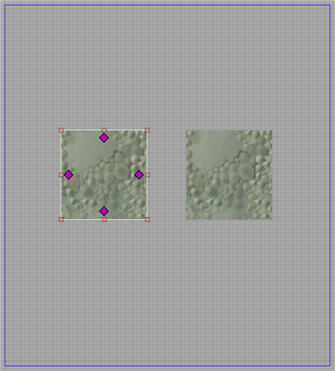
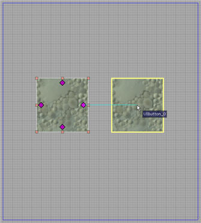
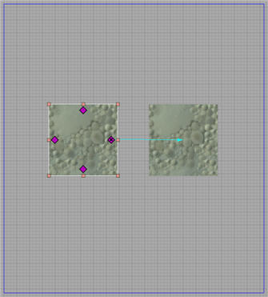
Focus Chain Tool (https://udn.epicgames.com/pub/Three/UIEditorUserGuideKR/UnrealUI_FocusChainTool.jpg)을 사용해서 위젯을 선택한 후 장면 내 위젯 간 포커스 연결이 이미 만들어진 것을 확인했을 것입니다. 이것은 위젯이 다른 위젯과 함께 장면에 배치될 때마다 UI 시스템은 장면 내 원 위치를 기준으로 새 위젯과 그 주변 위젯 간에 포커스 연결의 자동 생성을 시도하기 때문입니다.
입력
Unreal UI 도구를 사용하면 디자이너가 상태를 기준으로 위젯과 연결된 키 결합을 할당 및 수정할 수 있습니다.Modifying Default Key Bindings 열기
Bind UI Event Key Defaults 창을 사용하여 위젯의 기본 키 결합을 수정할 수 있습니다. 이 창은 Scene Editor 의 Edit 메뉴에서 Modifying Default Key Bindings를 선택하거나 간단히 F8 을 눌러 열 수 있습니다.Modifying Default Key Bindings 개요
Bind UI Event Key Defaults 창의 기능을 사용하면 특정 유형의 모든 위젯이 사용자 입력에 대응하는 방식을 전체적으로 변경할 수 있습니다. 즉 버튼 위젯에서 Clicked Input Event Aliases 에 대한 키 결합을 변경할 경우 이 변경이 패키지 내 모든 버튼 위젯에 전파됩니다. 개별 위젯의 행태도 Binding Keys to Individual Widgets 섹션에서 설명한 방법으로 변경할 수 있습니다. Bind UI Event Key Defaults 창이 제공하는 데이터 해석 프로세스는 예를 통해 설명하는 것이 가장 적절할 것입니다. 버튼 위젯에 대한 Input Event Alias Clicked를 살펴보겠습니다.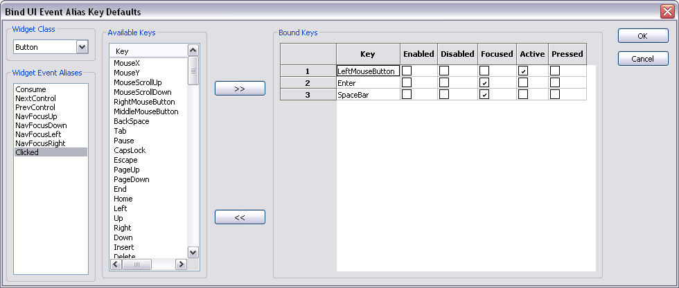
이 Input Event Alias 와 관련해서 3 개의 키가 바인드되어 있습니다. 메뉴의 키 결합 섹션에 대해 좀 더 상세히 살펴보겠습니다. 여기서는 Clicked Input Event Alias 에 결합된 키의 표와, 키를 눌렀을 때 이 이벤트가 트리거되는 상태를 보여 줍니다. 표의 첫 번째 단은 키의 이름입니다. 나머지 단들은 키 누르기에 답하는 다양한 상태입니다. 이 경우 LeftMouseButton 이 Active 상태를 사용하며 Input Event Alias 를 트리거하기 위해 키 누르기가 발생할 때 버튼 위젯 위로 마우스 커서를 가져가야 함을 나타냅니다. Enter 및 SpaceBar 의 경우 Clicked 이벤트가 트리거되려면 버튼 위젯이 Focus 상태여야 합니다. 원하는 만큼의 키 결합을 특정 이벤트에 추가할 수 있습니다. 또한 결합을 제거할 수도 있으나 이러한 변경은 변경하는 유형의 모든 위젯에게 전체적으로 적용된다는 사실에 유의하십시오.
입력 이벤트 별칭에 키 결합 추가
Input Event Alias 에 대한 키 결합 추가는 먼저 Bind UI Event Key Defaults 창에서 수정하려는 위젯 유형을 선택하는 것으로 시작됩니다. 그런 다음 키 결합을 추가할 Input Event Alias 를 선택하고 이후 Available Keys 목록에서 Input Event Alias 에 결합할 키를 선택해야 합니다. 선택한 후에는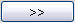
버튼을 클릭하기만 하면 됩니다. 이렇게 하면 새로운 키 결합이 Bound Keys 표에 표시되어 이 키를 처리할 상태를 수정할 수 있습니다.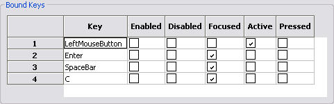
Bound Keys 표에서 제거할 키를 선택하고
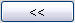
버튼을 눌러 키 결합을 제거할 수도 있습니다. 참고: UI input alias 대화 상자에서 위젯에 대한 입력 별칭에 실제로 키가 할당됐는지 점검하십시오. 이것이 입력 키가 위젯에 대해 처리되지 않는 (ProcessInputKey 를 통해) 가장 일반적인 이유입니다.
입력 이벤트 별칭의 유효화 및 무효화
어떤 키가 어떤 Input Event Aliases 에 결합되는지 정의하는 것 외에도 개별 위젯이 응답할 Input Event Aliases을 유효화 또는 무효화할 수도 있습니다. 특정 위젯이 응답하는 Input Event Aliases 의 편집은 Edit Widget Events 대화 상자를 통해 수행합니다. 이 대화 상자는 Scene Editor 뷰포트에서 위젯을 마우스 오른쪽 버튼으로 클릭하면 표시되는 컨텍스트 메뉴에서 Enable/Disable Widget Events 를 선택하면 열립니다. Edit Widgets Events 대화 상자에서 Input Event Aliases 를 선택하거나 선택 취소하여 선택한 위젯에 대한 이벤트 별칭을 유효화 또는 무효화할 수 있습니다. Input Event Alias 에 대한 이벤트를 변경해야 한다면 Modifying Default Key Bindings Overview 섹션에서 설명한 Bind UI Event Key Defaults 창도 Edit Widget Events 대화 상자에서 열 수 있습니다.
개별 위젯에 키 결합하기
앞에서는 특정 유형의 모든 위젯에 대한 위젯 Input Event Aliases 의 키 결합 변경 방법을 학습했습니다. 즉 특정 Input Event Alias 에 대한 키 결합을 변경한 경우 이 변경이 특정 유형의 모든 위젯 전체에 전파됩니다. 그러나 특정 유형의 모든 위젯보다는 특정 위젯의 키 결합만 변경하려는 경우가 더 많을 것입니다. 이러한 변경은 Kismet 이벤트를 사용하여 수행합니다. 이 주제를 설명하기 위해 입력과 관련된 Kismet 의 측면만 논의하겠습니다. UnrealUI 의 Kismet 에 대한 자세한 내용은 Kismet 섹션을 참고하십시오. 특정 위젯에 대한 Kismet Editor 에 접근하려면 Scene Editor 에서 Scene 뷰포트의 위젯을 마우스 오른쪽 버튼으로 클릭하고 컨텍스트 메뉴에서 Kismet 을 선택합니다. Kismet Editor 에 들어오면 키 결합을 수정하려는 상태에 해당하는 시퀀스를 선택해야 합니다.
시퀀스를 선택하면 Sequence Editor 가 State Input Event 를 표시합니다. 이 Kismet 이벤트는 현재 상태의 특정 위젯에 국한되는 키 결합 에디터 역할을 합니다. 위젯이 그에 대한 Kismet 시퀀스를 갖는 각 상태에는 기본적으로 State Input Event 가 작성됩니다. 바로 이 Kismet 이벤트를 통해 특정 위젯에 대해 사용자 지정 결합을 추가할 수 있습니다. 이것은 State Input Events 이벤트를 두 번 클릭하여 Bind Event Keys 창을 열어 수행합니다.
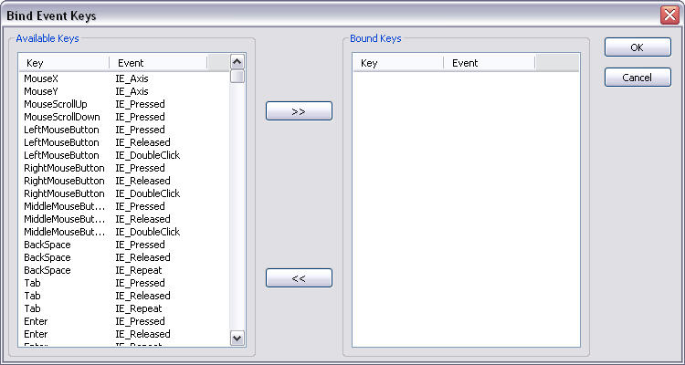
Bind Event Keys 창 안에는 Default Key Bindings 창의 결합 인터페이스와 유사하게 특정 상태에 대해 이 위젯에 키를 결합하는 인터페이스가 있습니다. Bind Event Keys 창 내 Availble Keys 창이 Scene Editor 에서의 Bind UI Event Key Defaults 창처럼 단순한 누르기를 넘어 키 누르기, 놓기 및 반복을 결합하는 부가 기능을 제공하는 것에 주목할 필요가 있습니다. 키 결합을 추가하기 위해 가용 키 목록에서 선택하고 버튼을 클릭합니다.
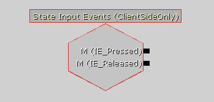
Bind Event Keys 창을 통해 새로 만들어진 키 결합이 State Input Event 의 새 출력 핸들에 의해 표시됩니다. 이 출력 핸들을 사용하여 지정한 키 누르기에 대해 Kismet 작동을 트리거합니다. Kismet 작동에 대한 설명은 Kismet 섹션에 있습니다.
개별 위젯에 대한 기본 결합 덮어쓰기
개별 위젯에 키 결합 섹션에서 설명한 방법을 사용하면 Scene Editor 의 Bind UI Event Key Defaults 를 통해 이미 결합된 개별 위젯에 대한 키를 다시 결합할 수도 있습니다. 즉 State Input Event 에서 제공하는 기능을 통해 개별 위젯에 새 키 결합을 추가하는 것은 물론 해당 유형의 위젯에 대핸 기본값인 키 결합을 다시 정의할 수도 있습니다. 기본으로 Input Event Alias 에 결합된 키를 Kismet State Input Event 로 다시 결합할 때마다 입력 키의 출력 핸들 옆에 OVERRIDE 라는 단어가 다음과 같이 표시됩니다.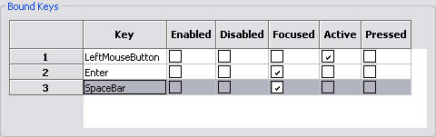

사운드 큐 사용
구성
게임의 DefaultUI.ini 파일을 열면[Engine.UIInteraction] 섹션에 UISoundCueNames 목록이 나타납니다. 게임에서 사용자 지정 상호 작용 클래스를 사용할 경우에는 이 섹션 이름이 달라질 수 있습니다. 대부분의 게임에서 그렇습니다. 이 목록은 UI 사운드 속성에 유효한 가용 이름을 정의합니다 (UIButton 의 ClickedCue 속성와 유사).
스킨
이제 Generic Browser 에서 UIskin 을 찾아 이를 두 번 클릭하면 Skin Editor? 가 열립니다. 왼쪽 창에서 게임의 스킨을 선택한 다음 오른쪽 창의 Sound Cue 탭을 클릭합니다. 오른쪽 창을 마우스 오른쪽 버튼으로 클릭하고 Add Sound Cue 를 선택합니다. 표시되는 대화 상자를 통해 해당 사운드 큐 이름을 실제 사운드 큐에 연결할 수 있습니다.Kismet 사용
Kismet Editor 열기
장면 창을 마우스 오른쪽 버튼으로 클릭하고 컨텍스트 메뉴에서 Kismet Editor 을 선택하거나, Scene Tools 패널의 Scene 탭에서 UI Scene 의 아이콘 (https://udn.epicgames.com/pub/Three/UIEditorUserGuideKR/UnrealUI_Tools_SceneIcon.jpg)을 마우스 오른쪽 버튼으로 클릭하여 UI Kismet Editor 를 열 수 있습니다.Kismet 개요
Kismet Editor 레이아웃
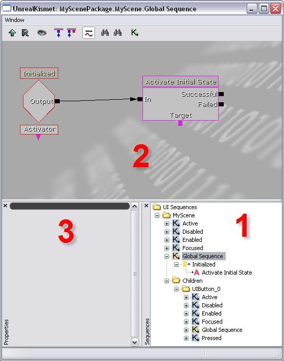
| 1. 시퀀스 브라우저 | sequence 브라우저는 state 시퀀스를 상태 폴더의 장면 아래 표시하며 각 위젯 이름이 트리에 나타납니다. |
| 2. 시퀀스 에디터 | 시퀀스 브라우저에서 노드를 선택하면 해당 노드가 에디터 그래픽 보기에서 선택됩니다. |
| 3. 속성 | 에디터에서 현재 선택된 항목의 속성 |
시퀀스 작업
시퀀스
UnrealUI Kismet 에서의 시퀀스에 대한 전반적인 개념은 UnrealKismet? 과 다르지 않습니다. 시퀀스는 다양한 복합 행태를 구현하기 위해 서로 상호 작용할 수 있는 Sequence Object 의 집합입니다. 그러나 하위 시퀀스의 복합 계층 구조를 구성하는 기능이 변경되었습니다. UnrealUI 컨텍스트에서 하위 시퀀스는 디자이너가 만드는 것이 아니라 장면, 위젯 및 상태에 따라 미리 존재합니다. 작성되는 모든 위젯과 장면은 본질적으로 위젯이 지원하는 특정 상태와 연결된 시퀀스의 변수 번호 외에 Global Sequence (전역 시퀀스)를 갖습니다. Global Sequence 에 있는 Sequence Object 는 항상 활성 상태이나 상태 시퀀스에 있는 Sequence Object 는 위젯이 해당 상태에 있는 경우에만 활성화됩니다.
Sequence 객체
Sequence 객체는 Kismet 시퀀스의 중요한 구성 요소입니다. 다양한 객체가 제공하는 기능이 장면 및 위젯에 대한 복합 동작을 스크립트화하기 위한 기능을 제공합니다. Sequence 객체에는 Events, Conditions, Actions,Variables 등 4 가지가 있습니다. 이 객체들은 다음과 같이 정의됩니다.Event
시퀀스에 조건 및 액션을 트리거하기 위한 입력 을 만드는 객체입니다. 이것은 오른쪽에 출력이 있는 빨간 마름모로 표시되며 이벤트를 트리거한 위젯을 나타내는 데 사용되는 하단의 액티베이터 변수가 될 수 있습니다. 이벤트는 장면 또는 위젯의 상태 변경에 대한 사용자 입력에 따라 달라지는 여러가지 촉매를 통해 트리거될 수 있습니다. 트리거 될 때, Event 는 Action 이나 Condition 에 대한 입력으로 사용할 수 있는 출력을 제공합니다. 현재 사용 가능한 이벤트의 전체 목록은 UI Sequence Object 참조를 확인하십시오.
Condition
시퀀스에 대한 흐름 제어 역할을 하는 객체입니다. 이것은 왼쪽에 입력, 오른쪽에 출력, 하단에 관련 변수가 있는 파란색 직사각형으로 표시됩니다. 기본적으로 조건은 일부 변수 상태에 따라 시퀀스에 입력을 재전달하는 방법 역할을 합니다. 현재 사용 가능한 Condition 의 전체 목록은 UI Sequence Object 참조를 확인하십시오.
Action
장면의 위젯이나 장면 자체에 대해 어떤 액션을 수행하는 객체입니다. 왼쪽의 입력 상자, 오른쪽의 출력 및 하단의 변수 연결로 나타나는 분홍색 직사각형으로 표시됩니다. 동작은 보통 이벤트나 동작의 출력 형태를 취하는 특정 입력에 의해 트리거됩니다. 현재 사용 가능한 Action 의 전체 목록은 UI Sequence Object 참조를 확인하십시오.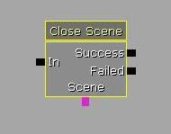
Variable
이 객체는 이벤트, 액션 또는 조건에서 사용하도록 특정 유형의 정보를 단순히 저장하는 객체입니다. Variable 의 유형에 따라 다른 색의 원으로 표시됩니다. 변수 시퀀스 객체가 저장하는 정보는 시퀀스에 국한된 것이거나 위젯처럼 Kismet 시퀀스 밖의 전역 데이터와 관련한 것일 수 있습니다. 장면 내 위젯과 연결된 Variable 을 만드는 것은 Scene Editor 에서 위젯을 선택한 다음 Kismet 의 Scene Editor 에서 마우스 오른쪽 버튼을 클릭하거나 Sequence Browser 에서 특정 시퀀스를 클릭하여 수행합니다. 시퀀스 객체를 만드는 데 사용하는 컨텍스트 메뉴는 New Object Var Using "Widget Name" 추가 선택과 함께 표시됩니다. 여기서 위젯 이름은 Scene Editor 에서 선택한 위젯의 이름입니다.
시퀀스 객체 만들기
두 가지 방법으로 특정 시퀀스에서 시퀀스 객체를 만들 수 있습니다. 첫 번째 방식에서는 객체가 추가될 시퀀스를 Sequence Browser 에서 선택해야 합니다. 다음으로 Sequence Editor 를 마우스 오른쪽 버튼으로 클릭하고 컨텍스트 메뉴에서 원하는 새 객체를 선택하면 됩니다. 두 번째 방식은 Sequence Browser 의 시퀀스를 마우스 오른쪽 버튼으로 클릭하고 컨텍스트 메뉴에서 새 객체를 선택하는 것입니다.
행태 만들기
Kismet 에서 유용한 시퀀스를 만들려면 시퀀스 객체 간의 관계 형성에 대한 기본 개념을 알고 있어야 합니다. 시퀀스에 배치할 수 있는 다양한 시퀀스 객체 유형은 모두 몇 가지 입력 및 출력 핸들을 포함합니다. 객체의 출력 핸들과 다른 객체의 입력 사이에 연결을 만들 수 있습니다. 이러한 입출력 핸들에는 일반적으로 연결 또는 링크될 수 있는 대상에 특정한 제약이 있습니다. 이 제약 중 일부는 입력은 출력에 대한 링크만을 수용하는 요구 사항처럼 내재적입니다. 다른 제약은 Activate UI State Action 이 분홍색으로 표시된 Object Variables 만을 수정하는 아래 예에서 색상 코드를 통해 표시됩니다. 아래 이미지는 변수에 영향을 미치는 행태에 대한 입력 역할을 하는 이벤트와 관련한 Kismet 행태의 기본적인 예를 보여 줍니다. Scene Opened Event 와 Activate UI State 사이에 링크를 만드는 동작은 이벤트의 출력 핸들을 클릭하여 액션의 입력 핸들로 끌어가는 것으로 수행합니다. 연결이 수립될 수 있는 경우 마우스 버튼을 놓은 지점에서 대상 핸들의 색상이 변경되어 링크가 만들어지게 됩니다. 변수의 경우에는 변수를 표시하는 전체 원이 연결 가능한 핸들 역할을 합니다.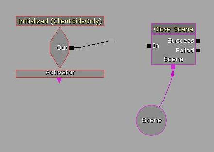

시퀀스 객체 참조
다음 참조는 UnrealUI 의 Kismet 구현에 고유한 Kismet 이벤트, 조건, 액션 및 변수를 정의합니다. 그밖의 모든 Kismet 시퀀스 객체의 기능은 UnrealKismet? 으로부터 전달되며 UnrealKismetReference 에서 참조될 수 있습니다.이벤트
UI
- Initialized
- 이 이벤트는 상주하는 시퀀스의 소유자가 초기화될 때 트리거됩니다. 이 이벤트에는 하나의 변수가 연결될 수 있으며 결과는 한 출력에 나타납니다. 이 변수는 액티베이터라고 하는 객체 변수입니다. 액티베이터의 작동은 시퀀스 객체 섹션의 이벤트 설명에서 다루었습니다.
- Enter State
- 이 이벤트는 상주하는 시퀀스의 소유자가 새로운 상태에 들어갈 때 트리거됩니다. 이 이벤트에는 하나의 변수가 연결될 수 있으며 결과는 한 출력에 나타납니다. 이 변수는 액티베이터라고 하는 객체 변수입니다. 액티베이터의 행태는 시퀀스 객체 섹션의 이벤트 설명에서 다루었습니다.
- Leave State
- 이 이벤트는 상주하는 시퀀스의 소유자가 현재 상태에서 나갈 때 트리거됩니다. 이 이벤트에는 하나의 변수가 연결될 수 있으며 결과는 한 출력에 나타납니다. 이 변수는 액티베이터라고 하는 객체 변수입니다. 액티베이터의 행태는 시퀀스 객체 섹션의 이벤트 설명에서 다루었습니다.
- Scene Opened
- 이 이벤트는 현재 장면을 열 때 트리거됩니다. 이 이벤트에는 하나의 변수가 연결될 수 있으며 결과는 한 출력에 나타납니다. 이 변수는 액티베이터라고 하는 객체 변수입니다. 액티베이터의 행태는 시퀀스 객체 섹션의 이벤트 설명에서 다루었습니다.
- Scene Closed
- 이 이벤트는 현재 장면을 닫을 때 트리거됩니다. 이 이벤트에는 하나의 변수가 연결될 수 있으며 결과는 한 출력에 나타납니다. 이 변수는 액티베이터라고 하는 객체 변수입니다. 액티베이터의 행태는 시퀀스 객체 섹션의 이벤트 설명에서 다루었습니다.
- On Click
- 이 이벤트는 시퀀스 소유자가 현재 상태에 대해 Clicked Input Event Alias 에 결합된 입력을 받을 때 트리거됩니다. 이 이벤트에는 하나의 변수가 연결될 수 있으며 결과는 한 출력에 나타납니다. 이 변수는 액티베이터라고 하는 객체 변수입니다. 액티베이터의 행태는 시퀀스 객체 섹션의 이벤트 설명에서 다루었습니다.
조건
UnrealUI Kismet 기능의 모든 조건은 UnrealKismet? 에서와 동일합니다. 자세한 내용은 UnrealKismetReference 를 참고하십시오.액션
기타
- 콘솔 명령
- 자세한 내용은 UnrealKismetReference 를 참고하십시오.
UI
- Close Scene
- 이 액션은 장면을 닫는 데 사용됩니다. 이 액션에는 입력 하나, 출력 하나 그리고 변수가 하나씩 있습니다. 변수는 닫을 장면을 지정하는 객체 변수입니다. 이 행태의 수행 후 이 액션은 액션의 성공 여부에 따라 Successful 또는 Failed 의 출력을 제공합니다. 지정한 장면이 닫힐 수 없는 상황이라면 액션이 실패할 수 있습니다.
- Open Scene
- 이 액션은 장면을 여는 데 사용됩니다. 이 액션에는 입력 하나, 출력 하나 및 변수 하나가 있습니다. 변수는 열 장면을 지정하는 객체 변수입니다. 이 행태를 수행한 후 이 액션은 액션의 성공 여부에 따라 Successful 또는 Failed 의 출력을 제공합니다. 지정한 장면이 열 수 없는 상황이라면 액션이 실패할 수 있습니다.
변수
UnrealUI Kismet 내의 모든 변수는 Kismet? 에서와 동일하게 기능합니다. 자세한 내용은 Kismet 참조? 페이지를 참고하십시오.아키타입
Fonts (글꼴)
위젯 참조
Widget Input Event Aliases
Widget Input Event Aliases 는 UI 시스템이 플랫폼 특정 입력 키를 플랫폼 독립적 입력 이벤트에 맵하는 방식입니다. 입력 이벤트는 일반적으로 UI 시스템 및 특정 위젯의 다양한 기능에 필요한 행태로서 이해할 수 있습니다. 이 입력 이벤트는 PC, Xbox360 또는 PS3 등 모든 플랫폼에 공통이므로 Input Event Aliases 는 공통 입력 이벤트를 플랫폼 특정 입력 키와 결합하는 수단이 됩니다. 이 Input Event Aliases 를 Kismet 이벤트와 혼동해서는 안 됩니다.- Consume
- 이 이벤트 별칭에 결합된 이벤트는 모두 삭제되며 이것이 결합될 수 있는 다른 이벤트 별칭을 트리거하지 않습니다. 또한 입력이 장면 내 타 위젯에 전파되지 않습니다.
- NextControl
- 이 이벤트 별칭에 결합된 입력은 포커스 체인을 고수하는 것이 아니라 위젯 간에 포커스 변경을 트리거하므로 "바운드 탐색" 으로 간주됩니다. 이 이벤트 별칭은 장면 위젯 목록의 다음 위젯으로 포커스가 전달되게 합니다.
- PreviousControl
- 이 이벤트 별칭에 결합된 입력은 포커스 체인을 고수하는 것이 아니라 위젯 간에 포커스 변경을 트리거하므로 "바운드 탐색" 으로 간주됩니다. 이 이벤트 별칭은 장면 위젯 목록의 이전 위젯으로 포커스를 전달하게 합니다.
- NavFocusUp
- 이 이벤트 별칭에 결합된 입력은 포커스 체인을 고수하는 위젯 간에 포커스 변경을 트리거하므로 "언바운드 탐색" 으로 간주됩니다. 이 이벤트 별칭은 링크 존재 시 현재 위젯의 맨 위 포커스 체인 핸들에 연결된 위젯에 포커스가 전달되게 합니다.
- NavFocusDown
- 이 이벤트 별칭에 결합된 입력은 포커스 체인을 고수하는 위젯 간에 포커스 변경을 트리거하므로 "언바운드 탐색" 으로 간주됩니다. 이 이벤트 별칭은 링크 존재 시 현재 위젯의 하단 포커스 체인 핸들에 연결된 위젯에 포커스가 전달되게 합니다.
- NavFocusLeft
- 이 이벤트 별칭에 결합된 입력은 포커스 체인을 고수하는 위젯 간에 포커스 변경을 트리거하므로 "언바운드 탐색" 으로 간주됩니다. 이 이벤트 별칭은 링크 존재 시 현재 위젯의 왼쪽 포커스 체인 핸들에 연결된 위젯에 포커스가 전달되게 합니다.
- NavFocusRight
- 이 이벤트 별칭에 결합된 입력은 포커스 체인을 고수하는 위젯 간에 포커스 변경을 트리거하므로 "언바운드 탐색" 으로 간주됩니다. 이 이벤트 별칭은 링크 존재 시 현재 위젯의 오른쪽 포커스 체인 핸들에 연결된 위젯에 포커스가 전달되게 합니다.
- Clicked
- 이 이벤트 별칭에 결합된 입력은 Kismet 이벤트 OnClicked 와, 위젯이 해당 상태를 지원하는 경우 Pressed 상태로 수신한 위젯의 전환을 초래합니다.
- SubmitText
- 이 이벤트 별칭에 결합된 입력은 Kismet 이벤트 Submit Text와, Pressed 상태로 수신한 위젯의 전환을 초래합니다. Submit Text Kismet 이벤트는 입력 시점에 위젯의 텍스트 항목 버퍼에 있는 모든 텍스트를 포함하는 매개 변수를 포함합니다. 이것은 편집 상자와 같은 텍스트 버퍼를 지원하는 위젯에 적용 가능합니다.
- Char
- 이 이벤트 별칭에 결합된 입력은 입력 키가 해당하는 문자의 형식으로 위젯의 텍스트 항목 버퍼에 추가됩니다. 캐릭터는 버퍼에서 텍스트 커서의 위치에 추가됩니다. 이것은 편집 상자와 같은 텍스트 버퍼를 지원하는 위젯에 적용 가능합니다. 편집 상자와 같은 클래스가 입력을 올바르게 처리하기 위해서는 주요 "캐릭터" 를 Char 이벤트에 추가해야 합니다.
- BackSpace
- 이 이벤트 별칭에 결합된 입력은 위젯의 텍스트 버퍼에서 제거될 텍스트 버퍼의 커서 앞에 캐릭터를 놓습니다. 이것은 편집 상자와 같은 텍스트 버퍼를 지원하는 위젯에 적용 가능합니다.
- DeleteCharacter
- 이 이벤트 별칭에 결합된 입력은 위젯의 텍스트 버퍼에서 제거될 텍스트 버퍼의 커서 뒤에 캐릭터를 놓습니다. 이것은 편집 상자와 같은 텍스트 버퍼를 지원하는 위젯에 적용 가능합니다.
- MoveCursorLeft
- 이 이벤트 별칭에 결합된 입력은 텍스트 버퍼 커서가 위젯의 텍스트 버퍼에서 한 캐릭터를 왼쪽으로 이동하게 합니다. 이것은 편집 상자와 같은 텍스트 버퍼를 지원하는 위젯에 적용 가능합니다.
- MoveCursorRight
- 이 이벤트 별칭에 결합된 입력은 텍스트 버퍼 커서가 위젯의 텍스트 버퍼에서 한 캐릭터를 오른쪽으로 이동하게 합니다. 이것은 편집 상자와 같은 텍스트 버퍼를 지원하는 위젯에 적용 가능합니다.
- MoveCursorToLineStart
- 이 이벤트 별칭에 결합된 입력은 텍스트 버퍼 커서를 위젯 텍스트 버퍼의 현재 행 시작 부분으로 이동하게 합니다.. 이것은 편집 상자와 같은 텍스트 버퍼를 지원하는 위젯에 적용 가능합니다.
- MoveCursorToLineEnd
- 이 이벤트 별칭에 결합된 입력은 텍스트 버퍼 커서를 위젯 텍스트 버퍼의 현재 행 끝 부분으로 이동하게 합니다. 이것은 편집 상자와 같은 텍스트 버퍼를 지원하는 위젯에 적용 가능합니다.
- DragSlider
- 이 이벤트 별칭에 결합된 입력은 슬라이더 위젯의 현재 값에서 추가 또는 차감되는 상대적인 마우스 커서 이동을 일으킵니다.
- IncrementSliderValue
- 이 이벤트 별칭에 결합된 입력은 슬라이더의 속성에서 정의한 Nudge 값만큼 슬라이더 위젯의 현재 값을 증가시킵니다. 이 별칭은 슬라이더 위젯에만 적용 가능합니다.
- DecrementSliderValue
- 이 이벤트 별칭에 결합된 입력은 슬라이더의 속성에서 정의한 Nudge 값만큼 슬라이더 위젯의 현재 값을 감소시킵니다. 이 별칭은 슬라이더 위젯에만 적용 가능합니다.
- IncrementNumericValue
- 이 이벤트 별칭에 결합된 입력은 슬라이더의 수치 편집 상자 속성에서 정의한 Nudge 값만큼 수치 편집 상자 위젯의 현재 값을 증가시킵니다. 이 별칭은 수치 편집 상자 위젯에만 적용 가능합니다.
- DecrementNumericValue
- 이 이벤트 별칭에 결합된 입력은 슬라이더의 수치 편집 상자 속성에서 정의한 Nudge 값만큼 수치 편집 상자 위젯의 현재 값을 감소시킵니다. 이 별칭은 수치 편집 상자 위젯에만 적용 가능합니다.
위젯 상태
위젯 상태는 특정 사용자 입력 설정, Kismet 로직 및 스타일 데이터를 포함할 수 있으며 위젯이 놓일 수 있는 조건입니다. 아래 목록은 다양한 위젯 상태의 기본 행태를 개괄적으로 보여 줍니다. 그러나 특정 위젯 상태에 있는 대부분의 위젯 속성은 수정이 가능합니다.- Active
- 마우스 커서를 특정 위젯으로 가져 가면 위젯이 활성 상태가 됩니다.
- Disabled
- 이 상태의 위젯은 포커스 체인 시스템이나 NextControl 및 PreviousControl Input Event Aliases 를 통해 Focus 상태가 될 수 없습니다. Disable 상태인 위젯은 자체 상태를 변경할 수 없습니다. Disabled 상태인 위젯의 자식들도 Disabled 상태로 설정됩니다.
- Enabled
- Enabled 상태인 위젯은 포커스 체인 시스템이나 NextControl 및 PreviousControl Input Event Aliases 를 통해 포커스를 받을 수 있습니다.
- Focused
- 포커스 체인 시스템이나 NextControl 및 PreviousControl Input Event Aliases 를 통해 다른 위젯이 Focused 상태를 설정할 경우 위젯이 이 상태에 넣어질 수 있습니다. Focus 상태인 위젯은 사용자 입력을 받을 수 있습니다.
- Pressed
- 위젯이 Focus 상태이고 Input Event Alias Clicked 에 결합된 사용자 입력을 받으면 이 상태에 들어갑니다.
위젯
- Panel - 이 위젯의 주 용도는 타 위젯의 컨테이너 역할을 하는 것입니다. 그 밖의 다른 위젯을 패널의 자식으로 하여 패널에 대한 위치 또는 크기 변경을 자식 위젯으로 모두 전파하는 관계를 형성할 수 있습니다. 이 위젯은 사용하는 스타일을 통해서 또는 속성의 이미지 카테고리에 있는 PanelBackground 속성을 명시적으로 설정하여 텍스처를 표시할 수 있습니다.
- Widget Input Event Aliases - Consume, NextControl, PreviousControl, NavFocusUp, NavFocusDown, NavFocusLeft, NavFocusRight.
- Widget States - Active, Disabled, Enabled, Focused.
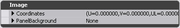
- Label - 이 위젯은 텍스트를 표시하는 간단한 방법을 제공합니다. 이 위젯이 표시하는 텍스트는 데이터 저장소에 결합되거나 속성의 Data 카테고리에 나열되는 Data Source 속성의 Markup String 필드에 입력될 수 있습니다.
- Widget Input Event Aliases - Consume, NextControl, PreviousControl, NavFocusUp, NavFocusDown, NavFocusLeft, NavFocusRight.
- Widget States - Active, Enabled, Disabled.
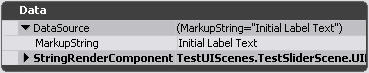
- Button - 버튼의 주 용도는 클릭되거나, 사용자 입력 또는 기타 상태 변경 이벤트를 통해 활성화되었을 때 이벤트를 트리거하는 것입니다. 이 위젯은 사용하는 스타일을 통해서 또는 속성의 이미지 카테고리에 있는 ButtonBackground 속성을 명시적으로 설정하여 텍스처를 표시할 수 있습니다.
- Widget Input Event Aliases - Consume, NextControl, PreviousControl, NavFocusUp, NavFocusDown, NavFocusLeft, NavFocusRight.
- Widget States - Active, Disabled, Enabled, Focused, Pressed.
- Label Button - 이 위젯은 버튼과 동일하게 작용하며 라벨 이라는 부가 기능이 있습니다.
- Widget Input Event Aliases - Consume, NextControl, PreviousControl, NavFocusUp, NavFocusDown, NavFocusLeft, NavFocusRight.
- Widget States - Active, Disabled, Enabled, Focused, Pressed.
- Image - 이 위젯은 텍스처를 표시하는 간단한 방법을 제공합니다. 이 위젯이 표시하는 이미지는 Style Editor 에서 또는 속성의 Image 카테고리에 있는 image 속성을 통해 결합될 수 있습니다.
- Widget Input Event Aliases - Consume, NextControl, PreviousControl, NavFocusUp, NavFocusDown, NavFocusLeft, NavFocusRight.
- Widget States - Active, Disabled, Enabled.
- Checkbox - 이 위젯은 입력 키를 다시 누르는 동안 Pressed 상태를 유지하는 것이 아니라 사용자 입력 시 Pressed 상태를 토글한다는 점을 제외하고 버튼과 동일합니다. 이 위젯에 대해 속성의 Value 카테고리에 있는 bIsChecked 속성을 선택하면 Pressed 상태를 기본값으로 설정할 수 있습니다. 이 위젯은 사용하는 스타일을 통해서 또는 속성의 이미지 카테고리에 있는 속성을 명시적으로 설정하여 텍스처를 표시할 수 있습니다.
- Widget Input Event Aliases - Consume, NextControl, PreviousControl, NavFocusUp, NavFocusDown, NavFocusLeft, NavFocusRight.
- Widget States - Active, Disabled, Enabled, Focused, Pressed.
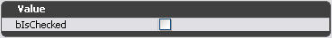
- Editbox - 이 위젯의 주 용도는 키보드 입력을 위한 텍스트 입력 필드 역할을 수행하는 것입니다. 포커스를 받으면 이 위젯은 위젯 바운드 안에서 숫자와 문자의 키보드 입력을 표시합니다. 이 위젯에 허용되는 글자 수는 속성의 Text 카테고리에 있는 MaxCharacters 속성의 설정으로 변경할 수 있습니다. 초기 값 설정을 위한 속성 및 편집 상자의 편집 가능 또는 읽기 전용 여부도 이 위젯 속성의 Text 카테고리에서 확인할 수 있습니다. Character set 속성을 통해 허용되는 문자 집합 설정을 변경하여 입력 문자를 제한할 수도 있습니다.
- Widget Input Event Aliases - Consume, NextControl, PreviousControl, NavFocusUp, NavFocusDown, NavFocusLeft, NavFocusRight, SubmitText, Char, BackSpace, DeleteCharacter, MoveCursorLeft, MoveCursorRight, MoveCursorToLineStart, MoveCursorToLineEnd.
- Widget States - Active, Disabled, Enabled, Focused, Pressed.
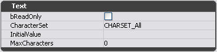
- Numeric Editbox - 이 위젯의 주 용도는 키보드 입력을 위한 수치 텍스트 입력 필드 역할을 수행하는 것입니다. 포커스를 받으면 이 위젯은 위젯 바운드 안에서 숫자 키보드 입력을 표시합니다. 또한 수치 값을 증가 또는 감소시키는 데 사용하는 두 버튼을 포함합니다. 수치 편집 상자는 편집 상자 위젯의 속성을 모두 가지며 여기에 표시할 소수점 이하 자리 수, 입력 (Nudge) 을 통해 값을 증가 또는 감소시킬 크기, 허용되는 최소 및 최대값을 지정하기 위한 속성이 추가되었습니다.
- Widget Input Event Aliases - Consume, NextControl, PreviousControl, NavFocusUp, NavFocusDown, NavFocusLeft, NavFocusRight, SubmitText, Char, BackSpace, DeleteCharacter, MoveCursorLeft, MoveCursorRight, MoveCursorToLineStart, MoveCursorToLineEnd.
- Widget States - Active, Disabled, Enabled, Focused, Pressed.
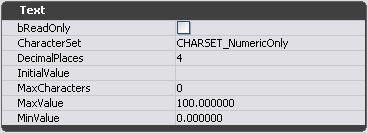
- Slider - 이 위젯은 사용자가 특정 범위 사이의 값을 선택할 수 있도록 하는 인터페이스 역할을 합니다. 이 위젯에는 속성의 Slider 카테고리에 나열되는 많은 속성들이 있습니다. 이러한 속성을 통해 값 범위의 최대값, 최소값 및 현재 범위를 사용자가 지정할 수 있습니다. 슬라이더가 사용자 입력 시 값 범위를 통해 증가할 크기도 속성에서 Nudge 값으로 정의됩니다. 슬라이더 값 또는 마커의 시각적 표시자는 속성의 마커 높이 및 마커 너비 섹션을 통해 사용자 지정할 수 있습니다.
- Widget Input Event Aliases - Consume, NextControl, PreviousControl, NavFocusUp, NavFocusDown, NavFocusLeft, NavFocusRight.
- Widget States - Active, Disabled, Enabled, Focused, Pressed.

- List - 이 위젯은 데이터의 테이블 보기 표시에 사용합니다. List 는 유형이 Collection 또는 ProviderCollection 인 데이터 필드에 결합된 경우에만 작동합니다(이 필드 유형은 왼쪽 패널의 데이터 공급자를 클릭할 때 데이터 저장소 브라우저의 오른쪽 패널에 표시됨). List 위젯이 유효한 데이터 필드에 결합되면 컨텍스트 메뉴를 통해 열을 추가/삽입/제거할 수 있습니다(위젯을 마우스 오른쪽 버튼으로 클릭할 때 UIList 메뉴 항목이 있어야 함). 일부 데이터 필드는 여러 단을 지원하지 않으므로 Add Column 메뉴에는 단 하나의 항목만 있으며 데이터 필드가 여러 단을 지원하지 않습니다.
- Combo Box - 이 위젯은 Edit Box 와 List 로 구성됩니다. 여기서는 두 가지 이벤트를 보냅니다. 즉 텍스트가 Edit Box 에서 변경될 때와 요소가 List 에서 선택될 때 각각 하나씩입니다. 콤보박스에 대한 데이터는 그 리스트에 의해 처리됩니다 - 콤보 박스의 목록을 선택하여 다른 목록에서처럼 데이터 저장소에 결합합니다. Edit Box 를 데이터 저장소에 결합할 수도 있지만 Edit Box 의 값은 콤보 박스로 관리하므로 목록이 초기화되거나 항목이 선택되면 데이터 저장소에서 가져온 모든 값이 덮어 쓰여지게 됩니다.
유용한 콘솔 명령들
toggledebuginput true 를 사용하여 이를 유효화해야 합니다. 그 다음, CTRL-ALT-D 를 누르면 정보의 표시를, CTRL-F 를 누르면 포커스를 받은 위젯의 표시를 토글할 수 있습니다.